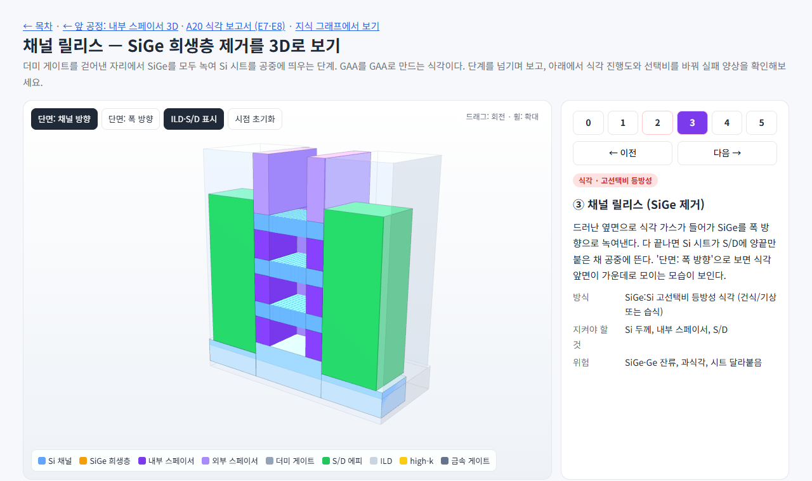
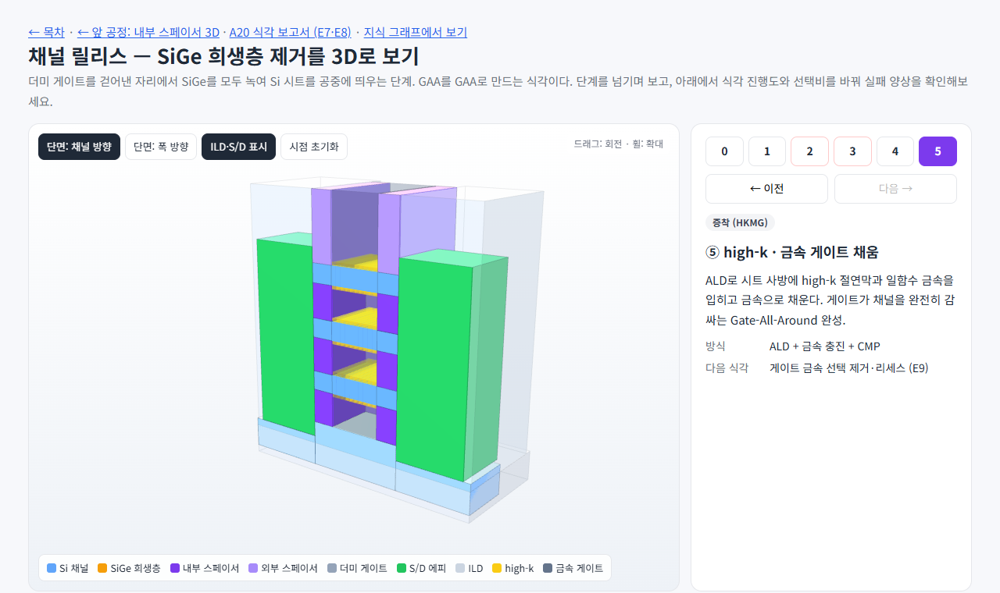
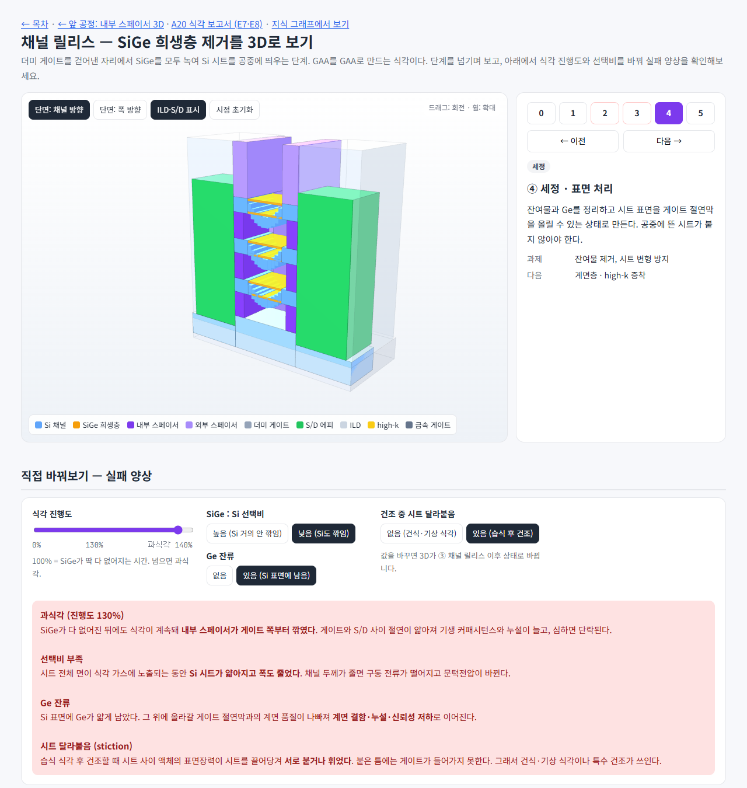

history_img/20261005_221100_cr_etch_front_width_section.png — ③ 진행도 60%, 폭 방향 단면: SiGe(주황)가 가운데에만 남음

history_img/20261005_221100_cr_released_sheets.png — ③ 완료: Si 시트가 내부 스페이서 사이에 떠 있음

history_img/20261005_221100_cr_hkmg.png — ⑤ high-k(노랑)와 금속 게이트가 시트를 감쌈

history_img/20261005_221100_cr_failure_modes.png — 실패 실험: 과식각 130% + 선택비 부족 + Ge 잔류 + 시트 달라붙음
#19
질문: SiGe 측면을 굳이 리세스하는 이유
지시 (원문)
SiGe 측면을 굳이 Recess 하는 이유는 뭐지?
분석 (Claude의 정리)
개념 질문. 판단이 아닌 설명이라 자문 없이 Claude가 답함.
핵심: 리세스는 내부 스페이서를 넣을 자리를 만들기 위한 것. 측면이 평평하면 시트 사이에 절연막을 넣을 수 없다.
과정 (답변 요약)
게이트–S/D 절연: 채널 릴리스 후 SiGe 자리에 게이트 금속이 들어온다. 외부 스페이서는 스택 위의 게이트만 막으므로, 내부 스페이서가 없으면 시트 사이 게이트 금속이 S/D 에피와 high-k 몇 nm만 사이에 두고 맞닿는다 → 기생 커패시턴스 급증, 누설·단락 위험.
채널 릴리스 때 S/D 보호: pFET의 S/D 에피는 보통 SiGe라 SiGe 제거 식각에 같이 공격받는다. 내부 스페이서가 SiGe 끝을 막는 장벽 역할.
게이트 길이 고정: 내부 스페이서 끝이 시트 사이 게이트의 시작점. 리세스 깊이 = 외부 스페이서 두께일 때 위쪽 게이트와 시트 사이 게이트의 길이가 같아진다.
왜 SiGe만: SiGe만 선택 식각하면 SiGe 높이에만 저절로 틈이 생긴다(자기정렬, 추가 패터닝 없음). SiGe는 어차피 나중에 제거되고, Si 시트는 S/D까지 이어져야 전류가 흐른다.
결과 / 증거
답변 완료 3D 페이지에서 리세스 깊이를 2nm로 놓고 ④단계 단면을 보면 "너무 얕은" 경우를 확인할 수 있다고 안내. (설명 답변이라 별도 스크린샷 없음)
#20
내부 스페이서 3D 페이지에 "왜 리세스하나" 섹션 추가
지시 (원문)
3D 페이지에 그 설명 섹션 추가해줘.
분석 (Claude의 정리)
#19에서 답한 "SiGe 측면을 리세스하는 이유"를 내부 스페이서 3D 페이지에 섹션으로 넣는다.
글만이 아니라, 내부 스페이서가 없을 때와 있을 때를 한눈에 비교하는 그림과 3D로 바로 확인하는 버튼을 함께 둔다.
과정
"왜 굳이 측면을 리세스하나" 섹션 작성: 한 문단 요약, 비교 단면도(내부 스페이서 없음/있음, HKMG까지 채운 상태), 이유 3가지 + "왜 SiGe만 파나", 3D 바로 확인 버튼 4개(적정 6nm / 얕음 2nm / 깊음 10nm / ⑤ 에피까지).
스크린샷 확인 → 설명 카드 안의 굵은 글씨가 줄바꿈되는 문제 발견. 기존 "왜 가장 어려운가" 섹션과 채널 릴리스 페이지에도 같은 문제가 있어 함께 수정.